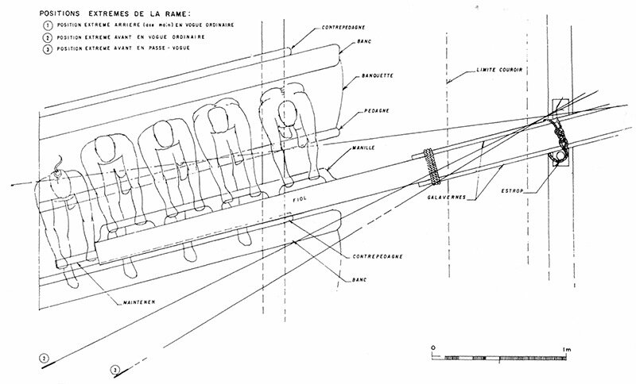
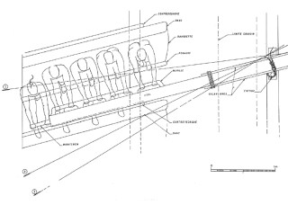

Отступим несколько от обзорного характера этих заметок и более подробно рассмотрим организацию гребли на галерах XVII века. (Кстати, подобно тому, как у наших моряков не принято говорить, что корабль «плывет» - корабли ходят! – так и в галерном жаргоне Средиземноморья нет термина грести (ramer, от слова rame – весло), а вместо него говорят voguer (от слова vogue – ход).
 
Стандартная галера имела 52 весла, по 26 с каждого борта и по пять гребцов на каждое весло (на каждую банку). (Фактически весел было 51, так как одна банка по центру левого борта была удалена для того, чтобы дать место очагу – fougon – для приготовления пищи). Более крупные Réales и Patrones имели от 30 до 32 пар весел и по 7 гребцов на каждую банку. Среди причин, которые привели к отходу от использовавшейся ранее системы гребли, при которой на каждом весле сидел один человек, был и возникший уже в XVI веке дефицит гребцов (galeotti) из числа добровольцев-профессионалов и появлении на галерах все большего числа рабов и каторжников. Синхронная гребля при системе, когда каждый гребец управляется со своим веслом требует от каждого гребца индивидуальной силы и мастерства, если же на весло посадить 5-7 человек, то среди них могут быть и более сильные и более слабые, и проворные гребцы и неопытные. Квалификация гребцов и их физические возможности учитывались при их рассадке. Гребцы, которые сидели у внутреннего конца весла уставали намного сильней тех, которые сидели ближе к борту, к уключине. Молодые, рослые, здоровые гребцы с крепкой хваткой становились загребными (vogue-avant). Они являлись старшими на каждой банке, отвечая за «натаскивание» новых гребцов. Это была элита гребцов галеры (шиурмы – chiourme). Их отбирали очень тщательно, как правило из рабов, но с увеличением числа осужденных на галеры преступников загребных назначали и из их числа. Четверо из загребных, которые занимали самые ответственные места, относились не к категории гребцов, а к матросам галеры и получали рацион свободных членов экипажа. Двое загребных находились на первых от кормы банках (по левому и правому бортам); их называли espaliers по причине близости ко «входу» на галеру - espale. Де ла Гравьер (Jurien de la Gravière) образно называет espale «вестибюлем галеры». Это участок палубы длиной немногим более двух метров между банками для гребцов и входом в кормовую надстройку. По краям этой площадки были выступы для того, чтобы на них крепить крюки входных трапов. Кормовые загребные задавали темп гребли. Два других загребных из привилегированной категории – conillers – находились на носовых банках. Conille – это участок палубы галеры длиной около трех метров между носовой частью галеры (tambouret) и первой носовой банкой. Роль этих загребных определялась тем, что они несли ответственность за работу с якорями (fers). Рядом с загребными на каждой банке сидели apostis , затем шли tiercerol, quarterol и, наконец, quinterol – самые слабые и тщедушные.
«Аранжировка» гребцов, распределение их по местам было очень деликатной задачей. Надо было добиться, чтобы гребцы каждой банки в совокупности имели примерно равную силу для сбалансированности хода. Умелое управление ресурсами шиурмы не исключало ударов со стороны комитов и подкомитов и других способов принуждения гребцов к напряженной работе. Гребцов одной и той же банки на галере называли «brancade», от староитальянского branco – стадо, стая, ватага. Это же слово использовали для общих кандалов с 5, 6 или 7 ветвями общим весом до полуцентнера,. Невозможно себе представить тесноту, в которой находились гребцы: на пространстве длиной 2,3 метра и шириной 1,25 м должны были работать, принимать пищу и спать пять человек…
После этого небольшого экскурса в описание системы гребли, продолжим наше обзорное рассмотрение положительных и отрицательных качеств галер.
Тактические характеристики галер в большой степени определялись физическими возможностями людей, которые сидели на веслах. Штормы, неблагоприятные ветры и течения могли быстро измотать гребцов. Продолжительные штили, когда гребцы постоянно находились в работе, делали то же самое. Обычно прилагались меры для того, чтобы снизить нагрузку на истощенных гребцов, давая трем четвертям или половине шиурмы отдохнуть, в то время как остальные определенное время (обычно полтора-два часа) сидели на веслах. Но даже на спокойной воде менее чем один час хода галеры при максимальном темпе гребли (passe-vogue), был равносилен по затрате сил гребцов четырем часам хода с нормальной крейсерской скоростью.
Возможно, ни одна характеристика галер не вызывала столько недоразумений, как максимальная скорость. Скорость естественно зависела от многих переменных, включая ветер, состояние моря, течения, условия для экипажа и гребцов, состояние самой галеры, наконец. Конечно, интендант Арнуль преувеличил максимальную скорость, когда заметил Кольберу, что “едва ли существует почтовая лошадь, которая движется быстрее.” Каковы бы ни были возможности почтовых лошадей, они конечно же были больше, чем у любой галеры, даже если последней помогал попутный ветер. Галера с хорошими гребцами при ходе на одних только веслах вряд ли могла превысить скорость 5 узлов на отрезке времени не более одного часа. Французский инженер восемнадцатого века Форфэ (Forfait) писал, что максимальная скорость галеры, которую она может поддерживать на протяжении одного часа, оценивается в четыре с половиной узла., с сохранением более низкой скорости на протяжении нескольких последующих часов, после чего, говорил он, гребцы должны прекратить работу и восстановить силы. Оценка Форфэ не кажется заниженной, в свете замечания опытного галерного капитана Барраса де ля Пенна, утверждавшего, что эскадра из пятнадцати галер в лучшем случае покроет расстояние от Рошфора до Гавра за один месяц. В Средиземном море после перехода из Марселя до Вильфранша капитан де Бетомас докладывал, что он покинул Марсельские (Йерские) острова «в прошлое воскресенье, 23-го в 9 часов вечера вместе с пятнадцатью галерами. Сюда (в Вильфранш) я прибыл этим вечером (26-го) в шесть часов. На всем пути дул встречный ветер и мешало встречное течение. Все гребцы настолько истощены, что я посчитал необходимым дать им по меньшей мере одни сутки на восстановление сил.» При более или менее непрерывной гребле в неблагоприятных условиях галеры Бетомаса делали в среднем по два узла на протяжении двух с половиной дней.
Таким образом, скорость хода на веслах представляла собой важное, но относительно кратковременное преимущество галер перед хорошо вооруженным врагом, использующим один только парус. При устойчивом ветре парусный корабль с хорошим экипажем мог легко уйти от преследующей его галеры. Галера могла сократить дистанцию на некоторое время, но чем дольше продолжалась погоня, тем медленнее шла галера и слабее становились гребцы. Таким образом, французские галеры испытывали большие трудности, когда пытались бороться в недружественных водах с легкими быстрыми испанскими корсарами Балеарских островов или Бискайского залива. Подобные же проблемы французы имели, действуя из Дюнкерка и Гавра против корсаров в Ла-Манше, особенно с островов Джерси и Гернси. В одном из докладов говорилось: «Мы пытались в течение многих дней догнать или поймать в засаде некоторых корсаров… мы преследовали два корабля в течение целого дня без всякого успеха… Если бы мы имели бригантину, оснащенную как веслами, так и парусами, мой господин, ни одному из них не удалось бы уйти от нас.» Штиль или легкие и переменные бризы были условием, необходимым для того, чтобы галеры могли добиться успеха в соревновании с легкими парусными судами в тех водах: такие условия не позволяли корсарам держать скорость, превышающую скорость галер. Но пираты Балеарских островов и Ла-Манша под парусами в обычных условиях опережали галеры, использующие и весла и паруса!
Чтобы завершить наш короткий обзор, приведем (в предварительном порядке; обстоятельно рассмотрим этот вопрос позже) некоторые расчетные данные для галер, имеющих 51 весло, при полном штиле, при темпе гребли 21 гребок/мин, шероховатости корпуса не превышающей 0,2 мм. Физиологи установили, что человек может поддерживать при работе мощность 140 Ватт в течение 10 часов, 170 Ватт в течение 4 часов и 200 Ватт всего лишь в течение 1 часа. Если брать работу загребного, то для достижения скорости 5 узлов (приблизительно 9 км/час) он практически тратит 200 Ватт, т.е. галера при такой скорости способна двигаться не более 1 часа! Если темп гребли будет поднят до 26 гребков/мин, то галера сможет достичь скорости 6 узлов, но от загребного потребуется приложение мощности 300 Ватт, что ограничивает время его работы всего 15 минутами. Хотел бы я посмотреть на тех специалистов, которые приписывают галерам крейсерскую скорость 7 узлов!
В следующий раз продолжим.